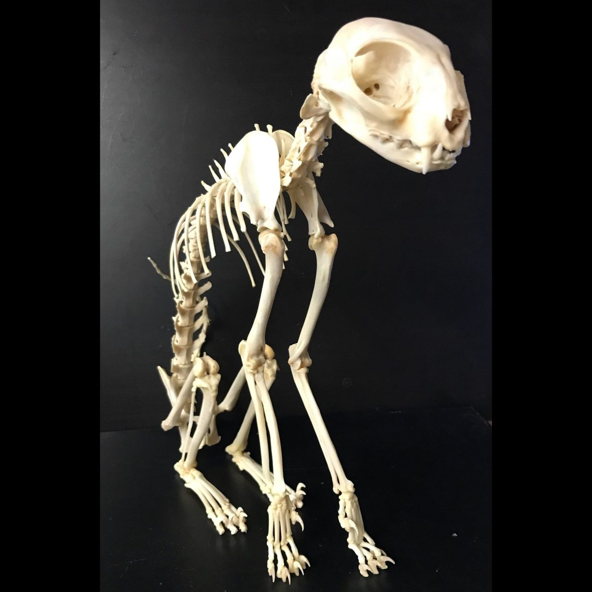
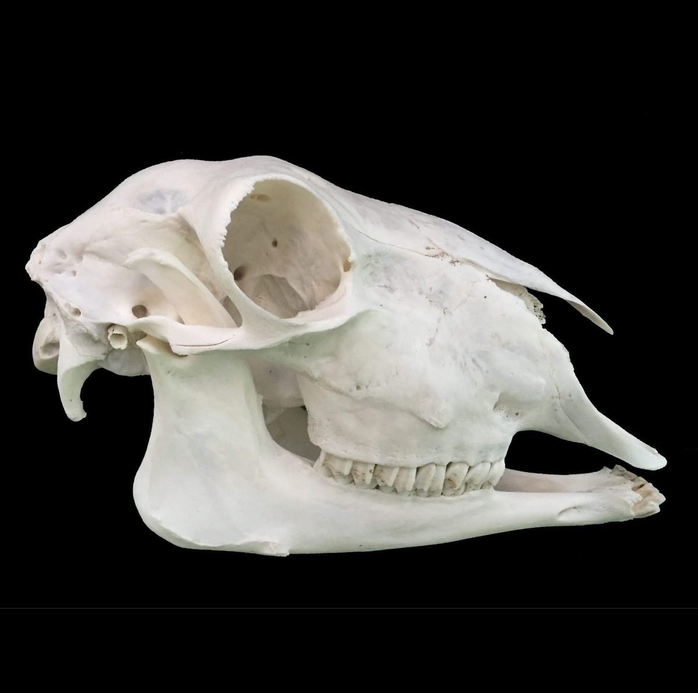
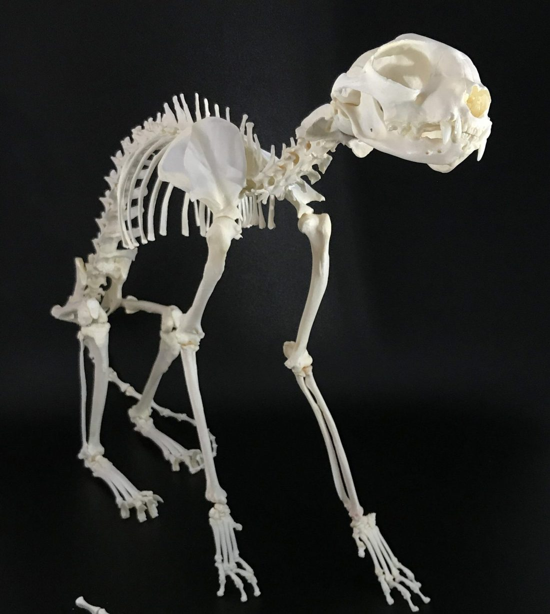
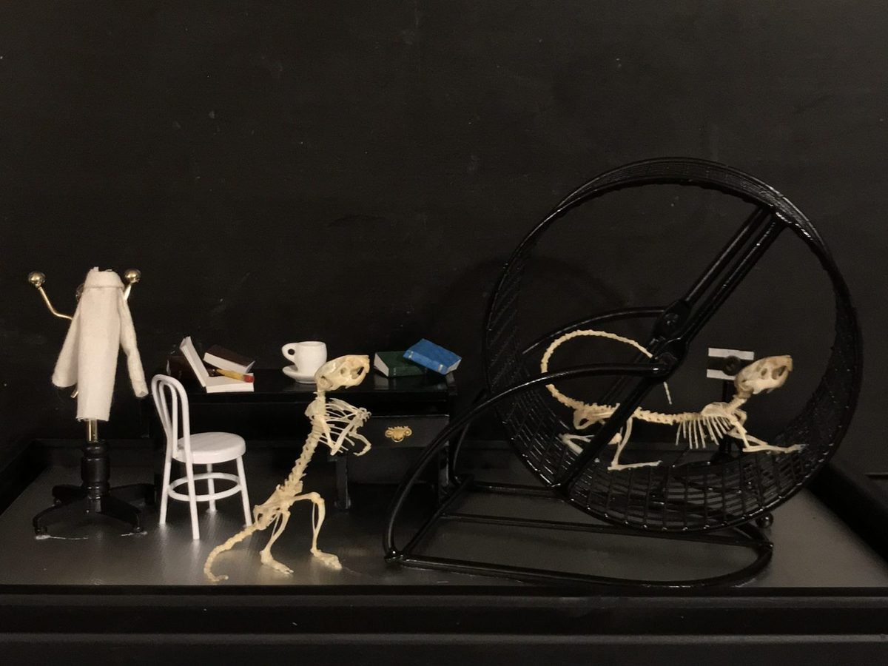

How it works
Choosing a memorial
Choosing a memorial is a very personal decision. Here’s what we make, how it works, and what the process is like, so you can decide what feels right.
Is this right for you?
Some people know right away that they want to keep their companion close in this way. Others aren’t sure, and that’s perfectly all right. Here are a few things people often wonder about:
- You don’t need to decide today. If your pet is safely frozen, there is time to think it over.
- Asking is not committing. You can write to us with any question at all, and we’ll answer honestly and gently.
- It doesn’t have to be a full skeleton. Many families choose a preserved skull, kept with a paw print, a bit of fur, or an engraved box.
- Shipping is legal and common. Families send their pets to us from all over the country.
What we make

Pet memorials
We care for every part of your pet’s memorial, from cleaning to the final piece. Choose a full articulated skeleton, or cremation with skull preservation, along with any keepsakes you’d like.
We’ve cared for cats, dogs, snakes, sugar gliders, bearded dragons, armadillos, and many more.

Skull cleaning & whitening
We clean skulls and bones with Dermestid beetles, the same careful method museums use for their finest specimens. It’s the safest way to clean even the most delicate bones. We watch every step closely.
We’ve cleaned skulls of zebras, foxes, coyotes, boars, bears, horses, cattle, sheep, goats, elk, caribou, cats, dogs, and more.

Articulation
We can articulate almost any skeleton, posed naturally and with very little visible support. We have experience with mammals, reptiles, birds, and amphibians.

Custom pieces
We love dreaming up something personal with you: a diorama, wall or table art, home decor, jewelry, wet specimens, freeze drying, and more. Many families send us a Victorian frame or mirror of their own to set a piece in.
The steps
How it works
- Write to us. Tell us about your pet and what you’re hoping for. We’ll talk it through together and answer your questions.
- We plan it together. We’ll agree on what we’ll make and what it will cost before any work begins. Every project is different.
- Send them to us. Our guide walks you through freezing, packing, and shipping, step by step.
- They come home. When the piece is finished we pack it carefully and ship it back to you.
What to expect
- Careful work takes time. We never rush. We’ll give you an honest idea of how long your project will take.
- We’ll keep in touch. You’re welcome to check in with us at any point.
- Payments are simple. We take a deposit to begin and the balance when the piece is finished. We email you a payment link for each.
- Return shipping depends on the size and weight of the finished piece, so we work it out once it’s done.
- Outside the United States? Please write to us first and we’ll see what’s possible.